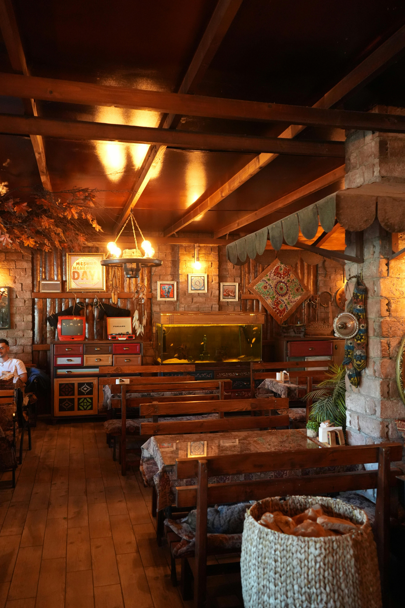
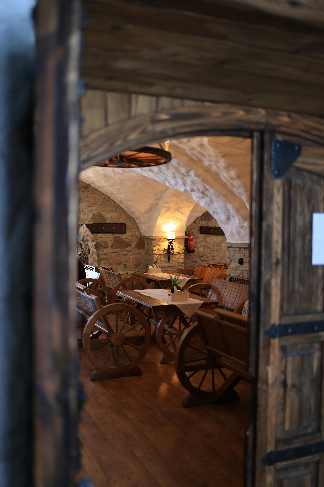
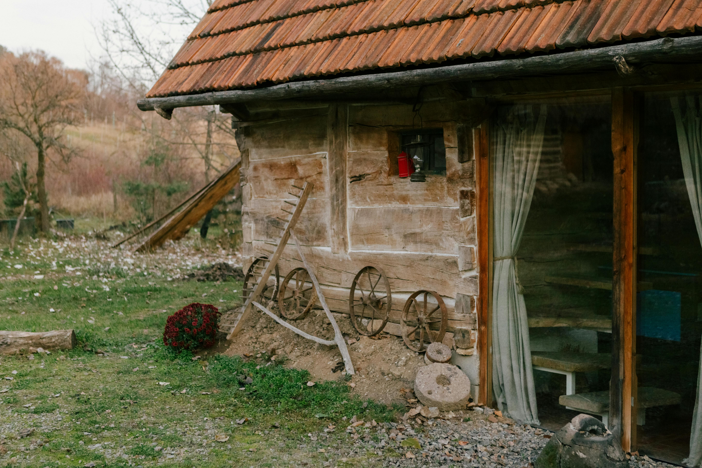
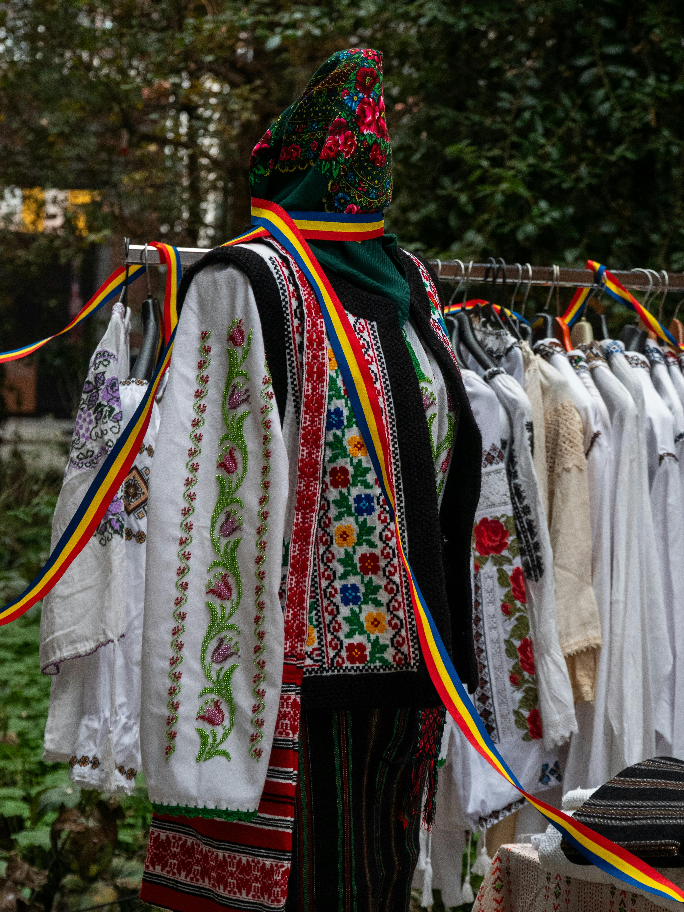
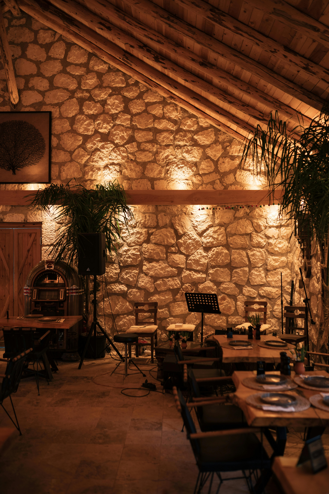
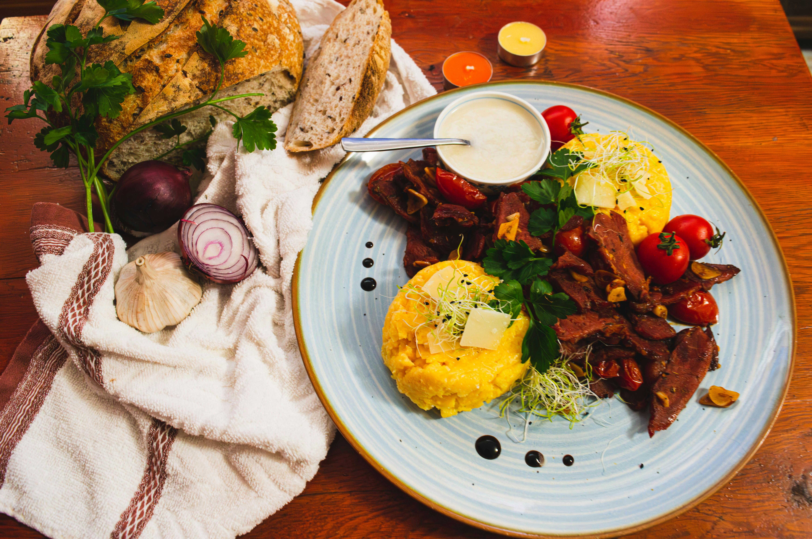
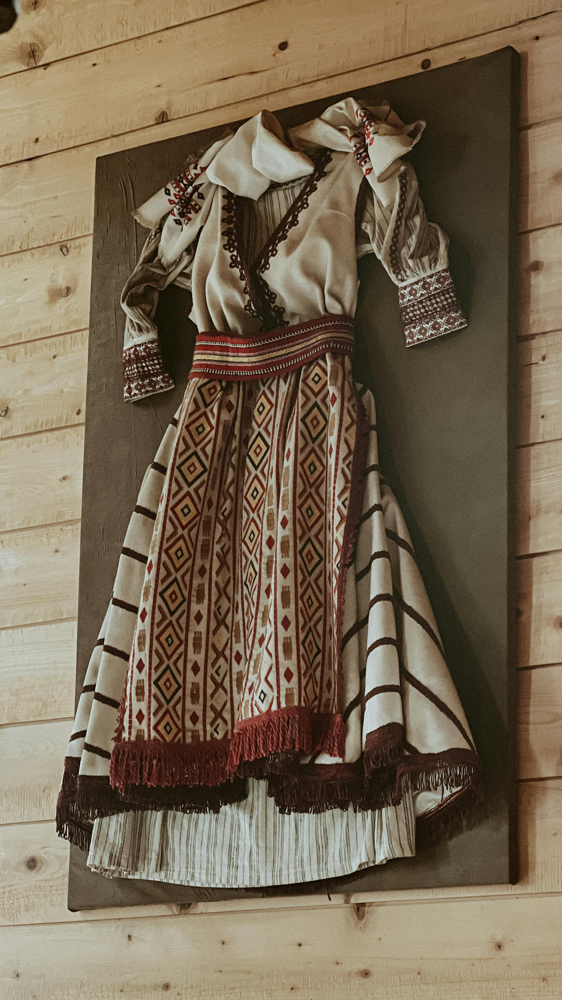

Food & Culture in Brașov
Brașov offers visitors more than beautiful views and historic landmarks. It also provides a chance to experience Romanian identity through traditional food, authentic restaurant settings, and cultural experiences that reflect the country’s heritage and everyday life.
Traditional Food
Romanian cuisine is rich, comforting, and closely connected to local traditions. Visitors in and around Brașov can enjoy traditional platters, soups, bean dishes, and regional meals served in places that reflect the atmosphere of old Romania.

Caru' cu Bere
Caru' cu Bere is one of Romania’s most famous traditional restaurants and is known for its historic atmosphere, old-style architecture, and classic Romanian dishes. Visitors can enjoy meals such as a peasant’s platter or Romanian bean casserole while experiencing a setting that reflects traditional Romanian hospitality.
Visit Website
Taverna cu Bucate
Taverna cu Bucate offers a more local and homely traditional dining experience. It is a good place for visitors who want to try Romanian soups, platters, and familiar homemade-style dishes in a relaxed atmosphere. This helps tourists explore the food culture of the region in a more authentic way.
Visit WebsiteCultural Experiences
Culture around Brașov is strongly connected to Romanian village life, local customs, traditional clothing, handmade crafts, and family-style hospitality. Visitors can discover a side of Romania that feels slower, more authentic, and deeply rooted in tradition.

Traditional Romanian Village Experience
Visitors can explore traditional Romanian village life through organised day trips near Brașov. These experiences may include local homes, traditional meals, rural landscapes, and customs that reflect Romania’s cultural heritage. It is an ideal way to understand how tradition is preserved outside the city.
Book Experience
Traditional Clothing & Heritage
Traditional Romanian culture is also expressed through embroidered clothing, handmade textiles, and decorative crafts passed down across generations. Exploring these traditions helps visitors understand the visual identity of Romanian heritage and its importance in local communities.
Learn MoreFood & Culture Gallery
Discover the visual side of Romanian tradition through local dishes, rustic spaces, traditional clothing, and village-inspired settings.


